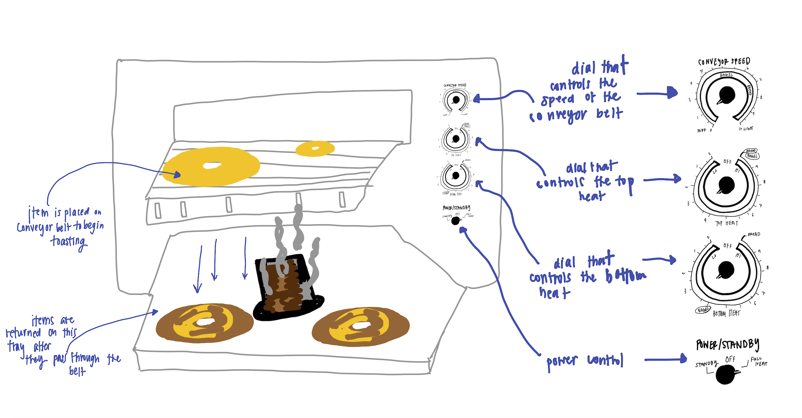
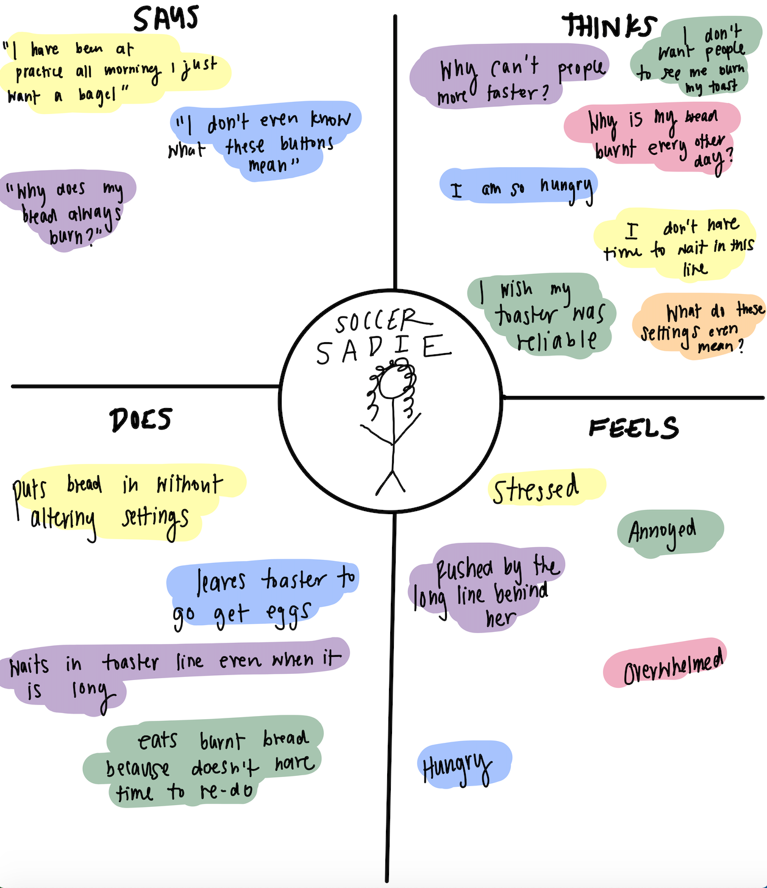
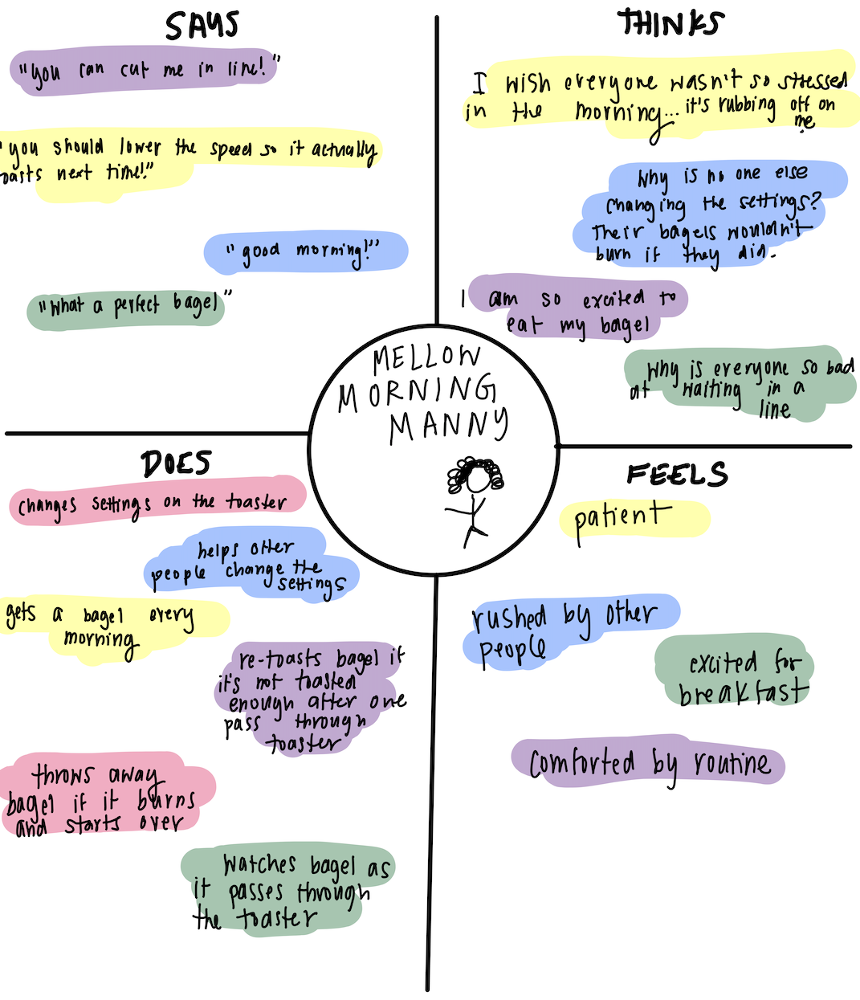
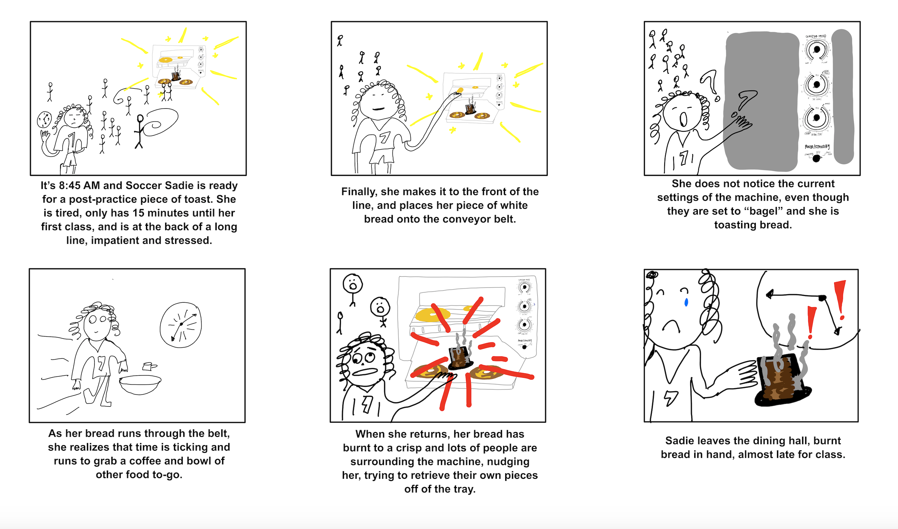

Introduction
In hopes of developing stronger design thinking principles and
better understanding of how humans interact with interfaces,
I decided to undertake a classic UX task--personas and storyboarding.
This an analysis of classic dining hall conveyor toasters.
This is an appliance I use on a regular basis and I was curious about
how other users interact with it. I closely analyzed the interface itself,
observed users interacting with it, conducted interviews with those users,
and built personas and a storyboard to depict all of my findings.
First, let's understand the interface

I observed the toaster and sketched its key components. It is trying to optimize the
process of many users needing to toast items simultaneously. The user places a
toastable item on the belt and it falls to the tray below when
it is ready to be retrieved by the user. There are 3 dials, which
control the speed of the belt, top heat, and bottom heat of the toaster.
User Observations
I observed and interviewed users interacting with the toaster and documented my
key findings.
Key observations
- Many users put their items through the toaster multiple times
- Many users line up in a crowded clump to use the toaster—some users appeared happy and chatted with friends, while others appeared stressed and in a rush, likely to their approaching 9 am classes
- Most users put their item in, walked away and came back minutes later to retrieve their toasted item
- Throughout my observations, only a few users changed the settings on the toaster, even when putting an assorted variety of bread, bagels, and English muffins through, which each have different settings marked on the toaster's knobs
- When a user changed the settings, only speed was changed, not top or bottom heat
- A few users burnt their item and started over and a few fed their item through the toaster a second time after being dissatisfied with the toasted level, but most users collected their toasted item from the tray and left the area
Questions asked in my interviews
- What features of the toaster do you notice first?
- Did anything surprise you during your toasting experience?
- What difficulties did you encounter while toasting?
- How often do you use this toaster?
- When would you use each of the 3 dials?
- On a scale of 1-10 how pleased with your toasted item are you after use of the toaster?
- Given the current settings of the machine, how toasted would you expect your item to be on a scale of 1-10 (1 being untoasted 10 being scorched? After the toast, did that number match the true toasted level of your item?
Summary of my interviews
- All of my interviewees were regular users of this toaster who used the toaster almost every morning, in a similar fashion every day
- Each of my interviewees had different habits in relation to the toaster’s settings—one self adjusts the conveyor speed every morning, one intentionally does not alter the settings, and one did not know that the settings existed until he saw a friend change them today
- Two of my interviewees were extremely satisfied with the toasted-level of their items and one was extremely dissatisfied, since his bagel burnt
- Interviewees had many grievances with the machine, specifically that their bagels often get stuck when they do not cut them perfectly down the middle, that people change the settings while their item is being toaster, and that you can’t consistently rely on the toaster giving the same result every day
Building Personas
Using overarching trends through my observations from above, I crafted personas
(model users) for the toaster and rendered an empathy map for each.
Soccer Sadie is a student-athlete studying Engineering who toasts bread at the dining hall every morning after practice and takes it to go as she tries to make it to her first class on time.
Mellow Morning Manny is a freshman studying Computer Science with a super packed schedule except for 1.5 hours in the mornings when he has relaxed and productive breakfast dates with friends or alone depending on his mood.


Soccer Sadie doesn’t know how to use the controls on the toaster and therefore doesn’t end up satisfied with her bagel. She represents a regular user of the toaster amidst busy mornings who has never understood or even noticed the toaster functionality.
Mellow Morning Manny does not have many problems with the interface, and when he encounters dissatisfaction with his toasting, he has the time to re-toast or start over. He represents a regular user of the toaster who has an understanding of the toaster functionality and utilizes it to improve his toasting experience.
Storyboard for Soccer Sadie
Next, I created the below storyboard to expand and depict the entire
story associated with use of this interface for a user.

Lessons Learned & Lingering Thoughts
This process gave me a greater understanding of interfaces—-specifically this toaster--
and how users do and do not utilize their designed functionality to produce the
desired results. How can we better create a toaster for use by
large groups of people, for different types of toastable items of
different thicknesses, for people with different desired levels of toastedness?
Through this process, I have strengthened my eye for human
interaction with interfaces, and have been more crticial of the
usable objects in my day to day life ever since.